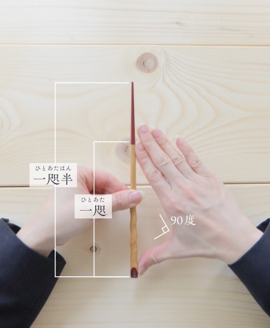

3つの質問で、あなたの「美箸％」と、
あなたに合った箸サイズを診断します。
今のお箸との付き合い方を、3つの質問で振り返ってみましょう。
--
お箸選びは、感覚や年齢ではなく数字で決めるのが正解。
あなたの手の「一咫（ひとあた）」を測りましょう。

顔の前に手をもってきて、パーをします。
親指と人差し指が直角に開いていることを確認します。
親指の先〜人差し指の先までの距離が「一咫」です。
※直角に開きにくい方は無理に広げなくてOK。定規やメジャーで測ってみてください。手元にない場合はおおよそでも大丈夫です。
原材料は孟宗竹（熊本産）100%。プラスチックや金属を使わない、完全天然素材のお箸です。今日診断した「ちょうど良い長さ」に合わせて選べます。
監修：つながるキッチン